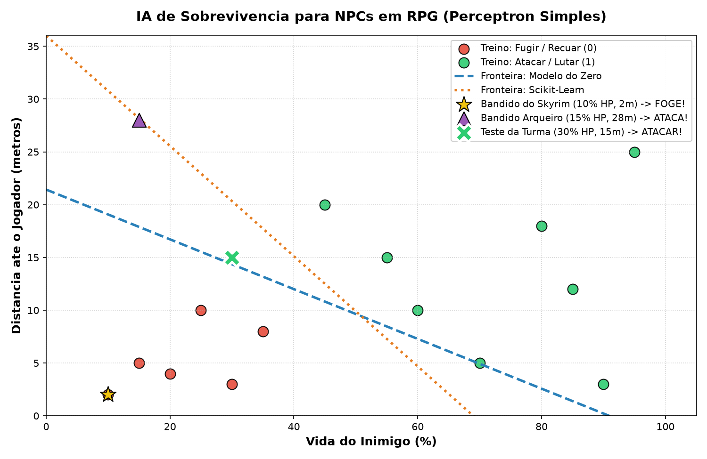

Tomada de Decisão com Perceptron Simples de Rosenblatt
if/else manuais ignoram o contexto de sobrevivência (vida vs proximidade da ameaça).
Definimos duas entradas vitais para a tomada de decisão do NPC:
O Perceptron encontrará automaticamente a linha de equilíbrio que separa o momento seguro de lutar da necessidade vital de fugir.
Diferente de redes neurais complexas, o aprendizado do Perceptron é puramente aritmético:
python ia_skyrim_perceptron.py
O Perceptron Simples de 1958 ainda é uma solução elegante, didática e viável para IA de jogos.